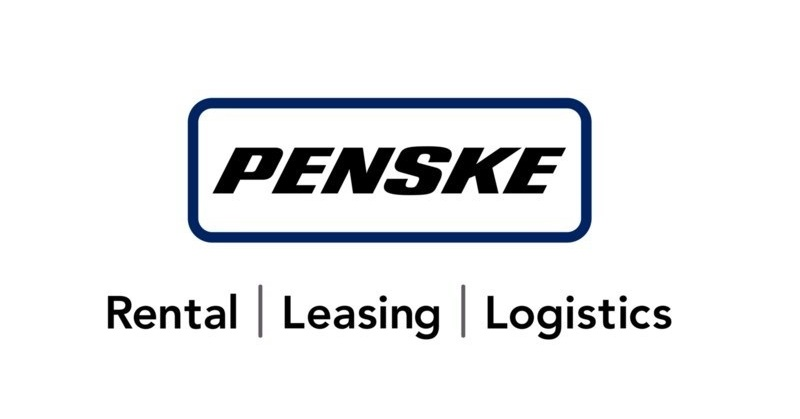
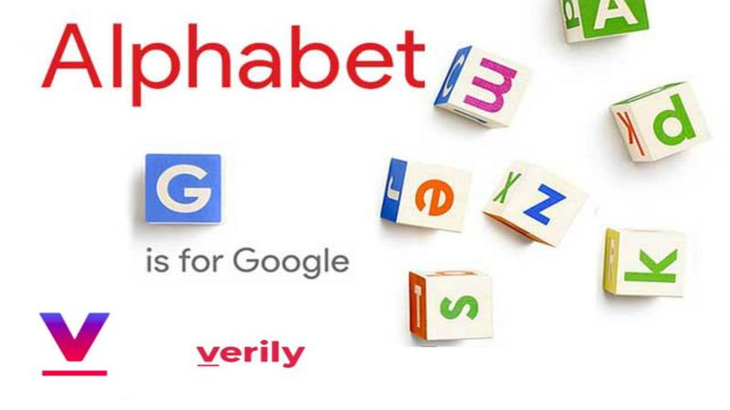
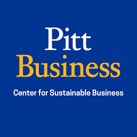
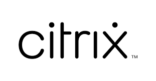

About Sakshi
I transform complex business challenges into elegant digital solutions by bridging engineering expertise with strategic vision. With over 7+ years of experience in technical foundation and business acumen, I excel at:
• Building high-performing product teams that delivered 25% faster time-to-market
• Driving significant business impact with quantifiable results (40% increase in user satisfaction, $4M revenue generation)
• Leading digital transformation initiatives across mobile, cloud, and SaaS platforms
• Translating technical requirements into customer-centric product strategies
My journey from software engineer to product leader has equipped me with a rare ability to connect enterprise technology decisions to measurable business outcomes.
I'm passionate about product-led growth and strategic innovation, with expertise in:
✓ Enterprise SaaS & Mobile Product Strategy
✓ AI/ML Product Applications (Certified in ML for Product Managers)
✓ Cross-functional Leadership & Stakeholder Alignment
✓ Technical Product Management & Cloud Solutions
Services
Define a compelling vision, prioritize roadmap, and identify market opportunities.
Leverage analytics, user research, and experimentation to drive insights.
Collaborate with engineers, understand APIs, infrastructure, and scalability.
Own end-to-end product lifecycle, manage cross-functional teams, and mitigate risks.
Translate customer pain points into solutions with intuitive design and user feedback.
Influence executives, align teams, and simplify complex ideas.
Programming Skills
-
C
50% -
C++
60% -
Python
80% -
JavaScript
80% -
HTML
90%
Familiar with
-
Database Management
75% -
Cloud Platforms AWS/GCP/Azure
80% -
Mobile Development
90% -
Design
70% -
Platform Engineering Tools
50%
Tools
ChatGPT
DeepAI
Scikit-Learn
TensorFlow
JIRA
Firebase
Figma
Asana
Python
GitHub
AWS EC2
Google Cloud
Citrix NetScaler
Citrix Receiver
Tableau
Splunk
SQL
PostgreSQL
Postman
Microsoft Office Tools
Confluence
Pandas
Soft Skills
-
Strategic Thinking and Vision
85% -
Data Driven Decision Making
90% -
Cross Functional Collaboration
80% -
Product Development and Management
100% -
Customer-Centric Development
100%
Resume
Working History
-
Product Manager
March 2023 - Present
•
Led UI/UX & API Teams: Developed government-compliant Android/iOS and web features, integrating feedback to enhance functionality, adoption, and save $20M.•
Implemented Agile: Reduced time-to-market by 25% through iterative development and rapid response to user needs.•
Enhanced Customer Experience: Improved roadside assistance with direct driver-service provider communication, cutting response time by 50%.•
Expanded User Base: Drove targeted campaigns and feature updates, increasing user acquisition by 30%. -
Strategy Consultant
Jan 2023 - March 2023

•
Personalized Login & Feed: Led the development of a customized login and feed experience to enhance user engagement within the platform.•
User Affiliation Selection: Enabled users to choose their preferred organization type, ensuring relevant and meaningful platform interactions.•
Personalized Recommendations: Implemented a tailored suggestion system to connect users with organizations and opportunities aligned with their interests.•
Technical Collaboration: Worked closely with the technical team to refine platform functionality and improve user experience.
-
Product Manager Intern
May 2022 - Aug 2022
• Orchestrated end-to-end product strategy for Onduo's digital health platform serving 5.6M members; integrated patient monitoring with personalized interventions driving 15% higher engagement and 22% improved medication adherence, while engineering data visualization systems that guided a strategic pivot resulting in 40% higher adoption.
• Transformed cross-functional collaboration through centralized project management that eliminated silos across 7 workstreams; implemented sophisticated prioritization framework balancing business impact, technical feasibility, and risk factors that increased team productivity by 25% and accelerated high-value feature delivery by 35%.
-
Strategy Consultant
Jan 2022 - Apr 2022
• Helped improve process quality of current FedEx delivery systems to increase efficiency by 0.2% saving 2 million dollars a year.
• Using DMAIC skills to analyze the current system and improve the efficiency of the current system in place with a sustainable solution that also improved labor utilization by 10%.
-
Program Manager
May 2021 - Aug 2021
• Organized and overseen the Center for Sustainable Business within the University of Pittsburgh, acting as representatives of the center when dealing with clients and business partners, and planning activities and events.
• Refined and spearheaded social media marketing strategy to raise $15,000 by boosting brand awareness for the Center
-
Product Consultant (Competitive Market Analysis )
Jan 2021 - Apr 2021
• Analyzed competitive standpoint of 3D vision bin picking robotics company, CapSen Robotics to provide recommendation to differentiate among its competitors based on comprehensive market research.
• Researched and identified a list of potential clients for the company by exploring new markets to boost sales by 30%.
-
Product Owner
Dec 2018 - Nov 2020
• Worked on the scalability and reliability aspects of App Delivery Management (ADM) Service, a SaaS offering hosted on GCP. In addition, as a Product Owner, I oversaw and tracked numerous cloud service offerings from development through deployment.
-
Software Developer
July 2016 - Dec 2018
• Worked as a full stack developer for various features for NetScaler Management and Analytics System (MAS), a Citrix SaaS product for management, analytics, automation, and orchestration to support applications deployed across hybrid cloud and containerized infrastructures.
Education History
-
Masters in Business Administration (MBA)
Jan 2021 - Dec 2022
CGPA: 3.8/4
Pursuing Dual Degree in MBA and Masters in Management Information System.
Courses: Product Development and Management, Project Management Concept and Processes, Six Sigma Theory and Practices, Marketing and Strategy, Consumer Behavior, Negotiations and Conflict Resolutions -
Masters in Management Information Systems (MIS)
Jan 2021 - Dec 2022
CGPA: 3.8/4
Pursuing Dual Degree in MBA and Masters in Management Information System.
Courses: Data Wrangling with Python, Database Management, Information Science Security, Information Technology Governance, Strategic IT in Supply Chain Management, Enterprise Systems and Integration in Business Process -
Bachelors of Technology (B. Tech.) in Information Science
Jul 2012 - May 2016CGPA: 9.13 / 10
Among the top 10% of students in the batch.
Courses: Programming Languages: [C, C++, Java, Python, JavaScript], Computer Networks, Data structures and Algorithms,Linux, Operating System, Algorithms and DataStructure .
Extra-Curricular
Student Executive Board Member
Joseph M Katz Business School 2021- 2022
Elected Student Executive Board Member to create a bridge between students, clubs and management staff for career development of students.
College Ambassador
Indian Graduate Student Association, 2021 - 2022
Provide an opportunity to bring together all the graduate students of Indian origin at Pitt and celebrate the culture and rich heritage of India.
Project Manager
Katz Invitational Case Study Competition, Aug 2021- Nov 2021
Organized the event and managed a team of 8 to develop a budget, promote social media marketing, and boost brand awareness across 150 schools.
Participant
Super Analytics Competition, Jan 2022- Feb 2022
Analysed world food bank records to identify the cause of hunger and the gap between food availability and unreachability.
Portfolio
Strategic Product Manager
March 2023 – Present
Leadership
Marketing
Led product strategy, user-centric innovation, and cross-functional leadership to deliver impactful, data-driven mobile solutions that align with business goals and regulatory requirements.
• Architected comprehensive roadmap for mission-critical driver applications handling $400K+ in delivery value daily; balanced competing priorities across 3 business units while ensuring compliance with DOT regulations and maintaining 99.9% system reliability for 10,000+ drivers.
• Led immersive research methodology including driver ride-alongs and contextual interviews that uncovered previously hidden pain points; translated findings into intuitive mobile features that increased user satisfaction by 40% and reduced training time from 2 days to 4 hours.
• Orchestrated seamless collaboration across a 20-person team spanning engineering, UX, QA, operations and compliance; implemented structured sprint ceremonies and decision frameworks that reduced delivery time by 25% while improving code quality metrics by 30%.
• Developed executive communication framework with tiered dashboards and insight-driven presentations; secured buy-in for controversial roadmap changes by quantifying $1.2M annual savings, streamlining approval cycles by 15% and accelerating time-to-market for critical safety features.
• Designed a sophisticated value-tracking system correlating product usage with operational KPIs; established a clear ROI methodology that quantified $3.5M in annual savings, enabling data-driven prioritization that boosted adoption of revenue-generating features by 20%.
Product Manager Intern
May 2022 – Aug 2022
Leadership
Marketing
Enhanced customer engagement and efficiency through data-driven decisions and optimized resource allocation.
• Managed cross functional team and stakeholder communications for product launch of Onduo for Highmark to monitor and provide personalized solutions to increase client engagement by 15%
• Defined detailed technical data requirements within an agile development framework using Asana Management Tool. Created and managed backlog for multiple workstreams in Asana in form of user stories, and requirements in google docs, running sprint planning meetings with various teams and Individual contributors to prioritize and assign tasks.
• Collaborated with web data scientists to research and follow industry trends and general trends to identify and suggest areas for product growth and development.
• Monitored and contributed to the development of staging products for client review from its development to its deployment.
• Used data visualization models to comprehend and monitor KPIs, providing outcomes in prepared presentations to leadership to promote transparency of progress.
• Developed a strategy for adapting to changing client requirements in close collaboration with internal teams that included developers, designers, data scientists, campaign managers, content writers, and customer success managers.
• Identified and documented implementation risks and dependencies for internal and external timelines and successfully communicate in lay terms to key stakeholders.
• Identified and lead the implementation of process improvements across workstreams, including leading retrospective discussions and proactive brainstorming sessions for individual and team growth.
• Streamlined cross-functional work inflow from multiple channels into one single platform for various marketing campaigns, which improved the productivity of the team by 25%.
• Collaborated with key stakeholders and cross-functional marketing teams to assist in defining go-to-market strategy.
• Trained employees in agile approaches, allowing the team to adopt a method that matched the project's requirements.
Software Developer
July 2016 – Dec 2018
Software Developer
Worked as a full stack developer for various features for NetScaler Management and Analytics System (MAS), a Citrix SaaS product for management, analytics, automation, and orchestration to support applications deployed across hybrid cloud and containerized infrastructures.
• Built a self-service SSH access request tool using Python. It uses signed certificates to grant on-demand access to VMs in multiple cloud providers using company SSO credentials.
• Implemented APIs for various features of ADM service such as customer licensing, internal API metrics, and cost reporting, to support scaling activities.
• Led and steered a time-sensitive project to completion, the Access Control product release, which made a substantial contribution to the quarter's $111 million in revenue.
• Spearhead and guided product release of “Citrix Analytics” from start to completion, a $12 million time-critical project.
• Collaborated with the design team to develop wireframes for UI Dashboards in Citrix Application Management to improve User experience.
• Conducted user requirement analysis and devised a self-service diagnostic tool to reduce customer support calls by 60%.
• Designed and implemented various dashboards for the data analytics tool of Application Delivery Controller, a Networking product, to accomplish a user-friendly and more intuitive representation of data.
• Oversaw and led the development of several features for the Citrix Analytics and Management product, including the App Security Dashboard, Secure Web Gateway Screens, and Video Insight.
• Liaison between various external organizations such as Google and Phantomjs to develop and support various features on the NetScaler MAS Analytics.
Product Owner
Dec 2018 – Nov 2020
Leadership
Worked on the scalability and reliability aspects of App Delivery Management (ADM) Service, a SaaS offering hosted on GCP. In addition, as a Product Owner, I oversaw and tracked numerous cloud service offerings from development through deployment.
• Implemented APIs for various features of ADM service such as customer licensing, internal API metrics, and cost reporting, to support scaling activities.
• Delivered a Google Cloud Platform solution for Citrix to save resources by reducing the idle running time of GCP resources during in-house development saving $70000 annually.
• Designed, built, and tested an air-gapped, cross-region disaster recovery strategy for cloud deployments for VPX hosted on GCP, AWS, and Azure cloud.
• Built dashboards and APIs for data analytics of Citrix products to monitor application performance.
• Mentored interns and new hires and got them up to speed quickly through hands-on training.
• Facilitated the planning and scheduling tasks, gauged team velocity, and resolved impediments for a multi-region for deployment of Citrix Application Delivery Controller (ADC) on Google Cloud Platform as a Certified Scrum Master.
• Led and managed as a Product Owner for a development team of 8 and delivered 6 software features to an offshore client.
• Developed framework for automating, testing, and delivering software features for ADC on VPX to detect and reduce bugs in deployment resulting in an 80% improvement in early bug deduction.
• Co-managed with the onsite coordinator and product managers to provide acceptance testing and support for Application Delivery Controller, a Citrix SaaS Product deployed in public as well as the private cloud.
Project Manager
Aug 2021 – Nov 2021
MBA Leadership
Coordinated events and served as the KICC planning committee's main contact. As a Project Manager, I managed-
• Organized meetings, agendas, and team updates to ensure that the team maintains on track with set goals and event planning. This also includes budget/financial planning and awards banquet planning.
• Coordinated strongly between Sponsors, Katz, and the KICC Marketing Manager to improve KICC brand awareness and support recruitment efforts.
• Created a roadmap for the team to successfully organize the inter-college competition hosting colleges all across the country.
Program Manager
May 2021 – Aug 2021
MBA Leadership
As the Program Manager for the Center for Sustainable Business at the University of Pittsburgh, I planned activities and events, served as the center's representative when dealing with clients and business partners, and planned events. I collaborated with university marketing teams, authored and organized new projects and research, produced new content to be shared and published on social media, and generated annual and monthly reports on financial and administrative accomplishments, goals, and responsibilities. Additionally, I have met with other administrative staff members to discuss setting a budget and timetable for specific operations as well as obtaining funding.
Product Marketing Consultant
Jan 2021 – Apr 2021
Marketing
MBA Leadership
• Analyzed competitive standpoint of 3D vision bin picking robotics company, CapSen Robotics to provide recommendations to differentiate among its competitors based on comprehensive market research.
• Identified and formulated a list of potential customers for the company to increase revenue by at least 30%.
Strategy Consultant
Jan 2022 – Apr 2022
MBA Leadership
Others
• Helped improve process quality of current FedEx delivery systems to increase efficiency by 0.2% saving 2 million dollars a year.
• Using DMAIC skills to analyze the current system and improve the efficiency of the current system in place with a sustainable solution that also improved labor utilization.
Software Engineer Intern
Jan 2016 – June 2016
Software Developer
• Leverage modernistic analytical concepts to create self-diagnostic tools to upgrade the business performance and customer engagement alike.
• As a full-stack developer provided a working model and integrated with the existing product to reduce the number of technical support calls to the company.
• Classified and predicted issues in the analytical tool NetScaler MAS which were causing 1000 technical support calls and emails due to misconfiguration.
Associate Product Architect Intern
Jun 2015 – Jul 2015
Others
• Independently conceptualized, structured and developed digital content for the e-learning platform, Chalkstreet
• Performed usability testing to help enhance the UI and UX of the platform to create a user-friendly platform.
• Developed a comprehensive business plan to bring new authors to our platform in collaboration with IIM graduates to get 5 clients to the platform.
Contact Informations
- E-mail: sakshimiddha94@gmail.com
LinkedIn:SakshiMiddha